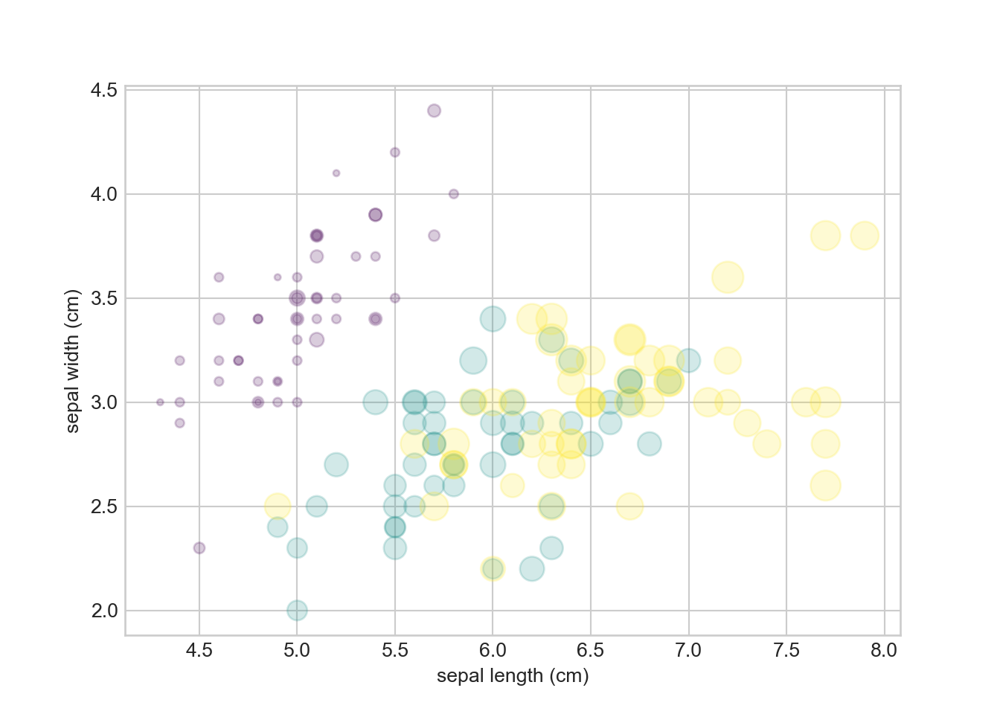

library(ggplot2)
ggplot(mtcars, aes(x=wt, y=mpg, color=cyl)) +
geom_point()
In this brief post, we are interested in introducing readers to Quarto, which, to steal from their website, is “an open-source scientific and technical publishing system built on Pandoc.” The use of Quarto primarily takes place within an IDE, e.g., RStudio, Jupyter Notebooks, etc.
In fact, you might even notice this blog post is formatted a bit different. That’s because we are using Quarto to write it. So what is Quarto in practice? Keep reading for a quick overview and demo.
The idea is to create dynamic documents and render the output to pretty HTML (or other types of) files. This is very much like rendering from Rmarkdown. Similarly, Quarto is a markdown flavor seen in the file extension, .qmd. This is similar to Github flavored markdown (.md), Rmarkdown (.Rmd), YAML headers (.yaml, which stands for “yet another markdown language”), and many others.
There are many benefits to using Quarto such as multi-language capabilities, meaning you can dynamically include R, Python, and Julia in a single document and render the output. This is clunky to do in other solutions, e.g., using reticulate. To quote directly from JuliaHub:
The overall design of Quarto is influenced heavily by R Markdown, however unlike R Markdown the architecture is language agnostic. In it’s current iteration, Quarto can render plain markdown, Rmd documents, and Jupyter notebooks.
Further, users can build websites, slide presentations, and many other reproducible documents with significantly less overhead and from the comforts of your preferred IDE using multiple languages. Further, many existing tools, tricks, and shortcuts in other markdown flavors work the same in Quarto, e.g., backticks (`) to highlight a word or phrase like this, three backticks (```) to denote a code block/chunk, denoting links e.g. <here_is_a_link>, text formatting with *, **, _, and so on.
Another benefit of dynamic documents like this is you can easily copy code from code chunks, rather than highlighting each line. So instead of only highlighting code in a document as in .md, Quarto includes a clipboard in the upper right of any code chunk to easily copy the whole chunk.
Take a look at their site to learn more and follow along with simple tutorials in a variety of languages, platforms, and IDEs: https://quarto.org.
Let’s take a look at a quick demonstration of Quarto and test it’s capabilities. We will incorporate R, Python, and Julia in a single document, and render the output. Importantly, as with Rmarkdown for example, you can hide (#| echo: false) or show (#| echo: true, or omit any echo command from within the chunk, and it will display the code by default) the code used to render the output. The only difference is all code chunk options are set within the code chunk via #|, e.g., to set a figure title, #| fig-cap: "Here is a figure title".
Of note: to include code from a specific language, that language must be installed on your machine. For example, you need to make sure R is installed, or Julia if using Julia, along with the JuliaCall R package installed to properly execute Julia code. If you get an error when trying to render in a given language, chances are that language is not installed on your computer. Quarto’s error messages are pretty informative unlike LaTeX, for example.
Here is a simple case starting in R. We will echo all code for simplicity and consistency.
library(ggplot2)
ggplot(mtcars, aes(x=wt, y=mpg, color=cyl)) +
geom_point()
Here is a simple case starting in Python. As with ensuring the language itself is installed on your machine, users must also ensure environments, modules and packages are also installed before attempting to execute code in Quarto (e.g., pip install seaborn).
import matplotlib.pyplot as plt
plt.style.use('seaborn-whitegrid')
from sklearn.datasets import load_iris
iris = load_iris()
features = iris.data.T
plt.scatter(features[0], features[1], alpha=0.2,
s=100*features[3], c=iris.target, cmap='viridis')
plt.xlabel(iris.feature_names[0])
plt.ylabel(iris.feature_names[1])
As noted above, be sure the Julia language is installed on your machine first. But if you forget, you can directly install from within RStudio, once the JuliaCall package is installed and loaded. Do so by setting installJulia = TRUE in the julia_setup() call, e.g.,
julia_setup(
JULIA_HOME = NULL,
verbose = TRUE,
installJulia = FALSE,
install = TRUE,
force = FALSE,
useRCall = TRUE,
rebuild = FALSE,
sysimage_path = NULL
)From here, set up a Julia code chunk (via ```{julia}) and you’re off!